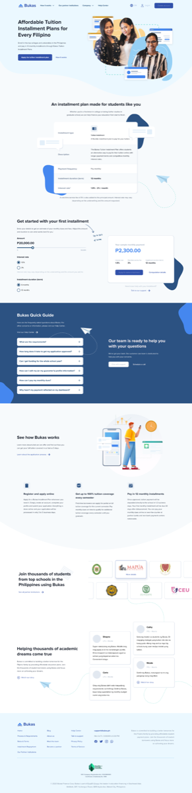
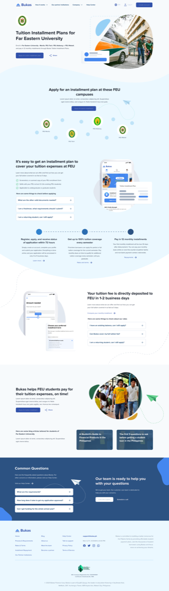
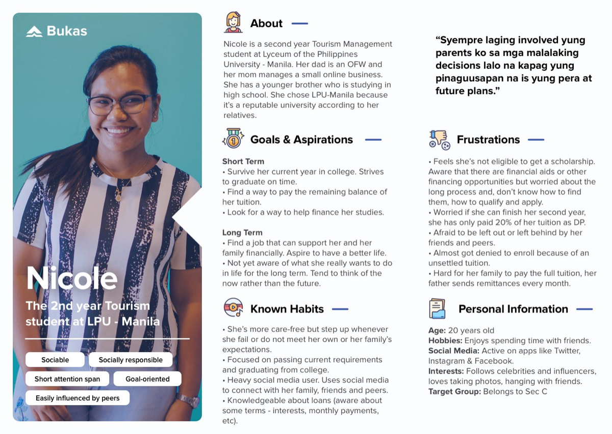
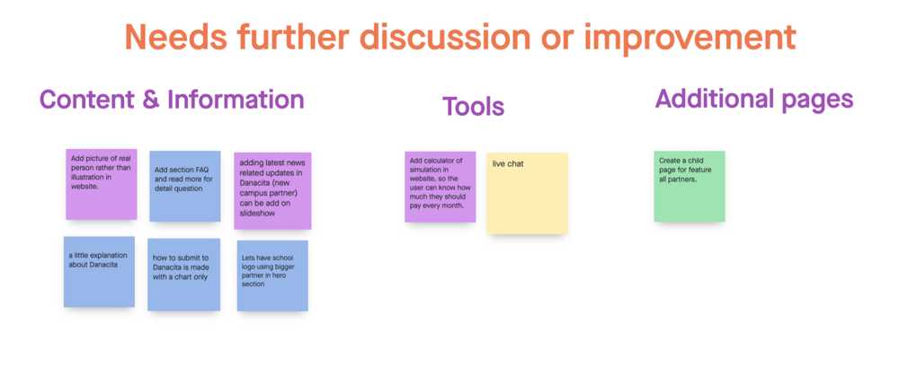
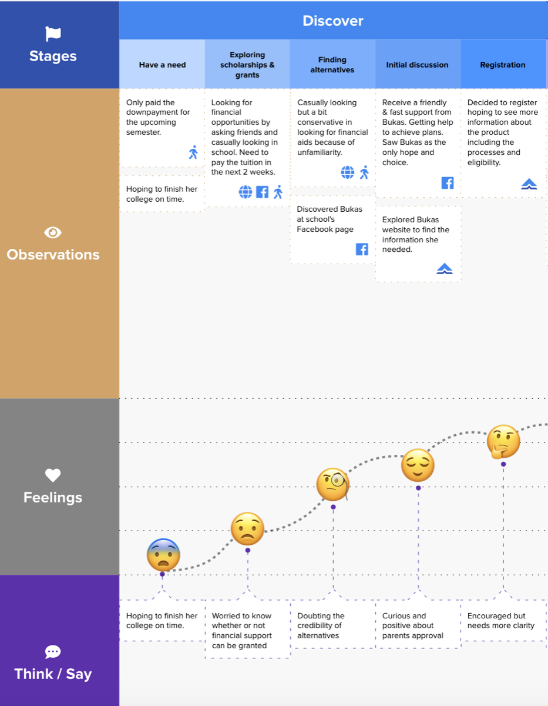
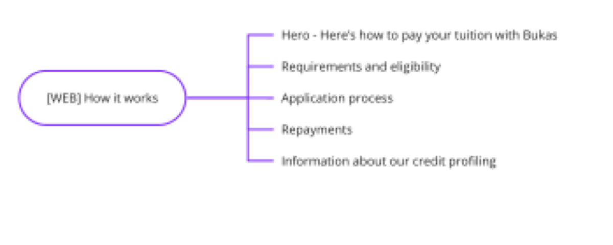
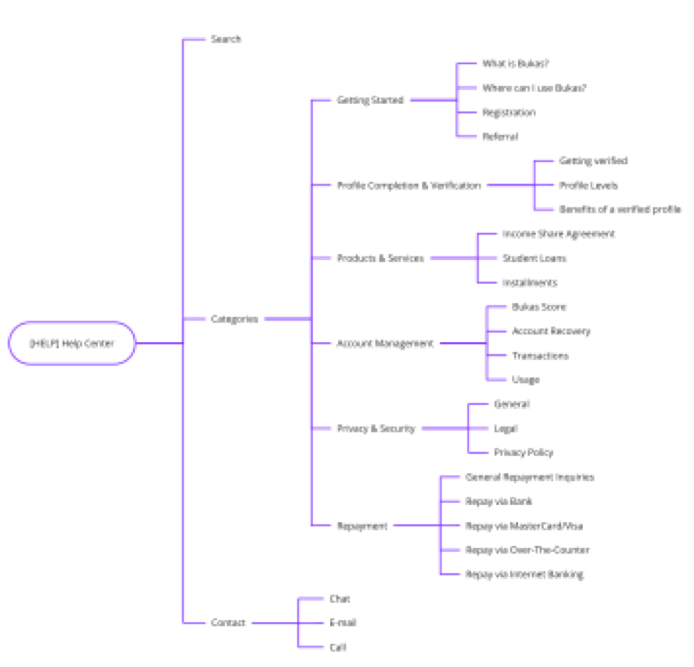
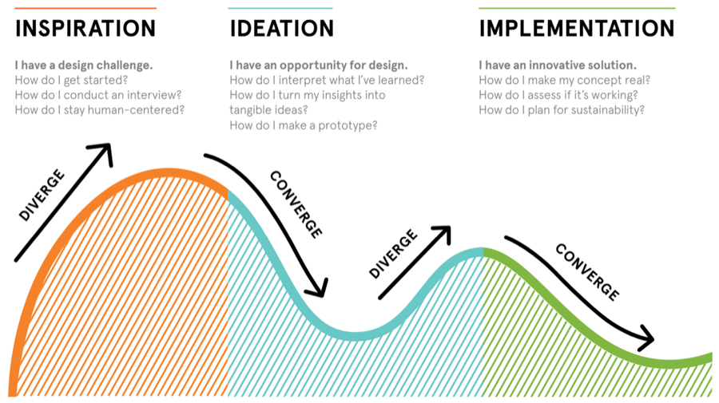

Redesigning Bukas
for student borrowers.
A web platform redesign for Filipino students applying for tuition financing. We rebuilt the KYC and onboarding journey to reduce fear, ease parental involvement, and turn an intimidating loan flow into a guided one.
Role
Senior Product Designer
Timeline
2021 · 16 weeks
Platform
Web Platform
Industry
Fintech / EdTech
Students helped
4,133
Funded across partner schools
Accounts created
16,585
Top of the funnel
Submissions
7,562
Loan applications submitted
Approved
1,504
Reached disbursement
01 Context
Why students drop out of the loan funnel — and where the design needed to do the work.
The Challenge
Bukas is the Philippines' largest tuition installment platform, run by ErudiFi. Most applicants are first-time borrowers — students applying alongside a parent or guardian. The funnel told a hard story: of 16,585 accounts created, only 7,562 reached submission and 1,504 were approved. The biggest drop wasn't approval — it was happening before students even finished the application.
The Mandate
As Senior Product Designer, I led a redesign of the Bukas web experience — from the marketing site through KYC and submission. The goal: make students feel safe enough to start, parents confident enough to co-sign, and the team able to ship without rebuilding the backend. The work had to perform on slow connections and on shared family devices.
Funnel snapshot
Before redesign vs after
The biggest drop was between starting KYC and finishing it. After the redesign, KYC completion became the strongest step in the journey instead of the weakest.
02 Process
Double Diamond. Each phase fed into the next, with student and parent voices at every checkpoint.
Heuristic Evaluation
Stage 01I audited the live Bukas site and partner-school flows (FEU and others). I flagged unclear hero copy, missing trust signals, ID-upload friction, and the way repayment terms were tucked behind expandable rows.
Cross-Functional Workshop
Stage 02I ran a remote affinity workshop with product, ops, credit, and partnerships. The team voted on the highest-leverage problems — content clarity, the "How it works" story, and KYC fear were the recurring themes.
Field & Remote Research
Stage 03We interviewed students and parents who had abandoned the flow. We watched them re-do KYC live: photographing IDs in low light, asking parents about repayment terms, and second-guessing whether the loan was real.
Redesign & Ship
Stage 04New IA, new KYC flow, new "How it works" page. We tested wireframes with real applicants, then shipped the redesign with the engineering team across web and partner-school landing pages.
03 The Existing Product
Audit of v1 web

Five issues came out of the audit. Each one mapped to a measurable drop somewhere between visit and submission.
Issue 01
Hero copy didn't say what Bukas is
Visitors asked "is this a loan?" — the homepage led with an emotion, not the offer.
Issue 02
"How it works" was buried
The clearest explanation of the product was three taps deep, behind a help-center link.
Issue 03
ID upload felt unsafe
No reassurance about how the photo would be stored. Students paused, asked a parent, and dropped off.
Issue 04
Repayment terms hidden behind toggles
The thing parents most needed to read was the thing they were least likely to find.
Issue 05
No save-and-resume
Applicants needed to gather documents from a parent, but if they closed the tab they started over.
04 Field Research
Philippines · Students & ParentsMethodology
- → Remote interviews with applicants & parents
- → On-screen task replays of KYC
- → Cross-functional remote affinity workshop
- → Funnel analytics across partner schools
Persona spotlight · Nicole
First-year university student. Applies on a shared family laptop, often with her mother nearby. Confident online, but nervous about anything that asks for a photo of an ID.

Cross-functional workshop · most-voted issues

Key Research Findings
Trust
Fear is the funnel.
Drop-off wasn't laziness. Students stopped because they weren't sure the product was safe or real, especially at ID upload.
Co-applicants
Parents are users too.
Almost every applicant paused mid-flow to discuss repayment with a parent. The screens needed to make sense to both at once.
Comprehension
Explain before you ask.
Users wanted "how it works" up front, not in a help center. Knowing the steps made them willing to start.
05 Design Principles
HMW & structural rules
Reframing the problem
How Might We Help Students Feel Safe Enough to Finish?
The journey map highlighted a clear tension: students were excited to start, but as soon as KYC asked for an ID, the energy drained. Parents needed information before they would say yes; students needed reassurance before they would even ask their parents.
Our HMW direction was to lower the emotional cost of every step: explain the product before asking for documents, surface repayment terms early, and make every input feel intentional and safe.
We paired this with stronger trust signals (school partnership badges, regulator notes), clearer language in Filipino-friendly English, and a save-and-resume flow so students could finish KYC after they had spoken with a parent.
01
Explain First
"How it works" sits on the homepage, not in a help center. Three steps, plain language, before any sign-up.
02
Honest KYC
Every ID upload tells the user why it's needed and how it's stored. No surprises, no buried legal copy.
03
Save & Resume
Applicants can pause to talk to a parent and pick up exactly where they left off, on any device.
04
Terms Up Front
Repayment schedule and fees are visible early, not hidden behind toggles. Built for parents to read on a shared screen.
06 Information Architecture
Structural exploration
Web · How it works

Help Center
What changed
- "How it works" promoted from a buried page to a homepage section.
- Help center restructured around the actual questions parents asked, not internal team labels.
- Partner-school flows aligned so FEU and other schools share the same KYC backbone.
- Single source of truth for repayment terms across the marketing site, dashboard and emails.
07 High Fidelity
Shipped interface
Marketing Site
A clear value proposition above the fold, "How it works" promoted to the homepage, partner-school logos as the first trust signal.
Partner-School Flow
Co-branded landing pages share the same KYC backbone, so a student arriving from FEU sees a flow that already knows their school context.
Design Reasoning · KYC Flow
Why This Version Works Better
Usability sessions showed that students dropped at points where the product was asking for trust before earning it. The redesign re-orders the journey so explanation comes first, evidence comes second, and asks come last.
- Clearer first impression: the homepage now answers "what is this and how does it work" within five seconds.
- Trust before request: partner-school badges and regulator notes appear before any form field.
- Honest KYC: every ID upload step explains why it's needed and how it's protected.
- Save & resume: applicants can pause for a parent conversation and return without losing progress.
- Repayment up front: terms appear early, written for parents to read on a shared screen.
- One backbone for all schools: partner-school flows reuse the same KYC, reducing cognitive load and engineering cost.
In short, the redesign turns a fearful loan form into a guided conversation between Bukas, the student, and the parent who has to co-sign.
08 Before / After
- ✕ Hero copy didn't say what Bukas was
- ✕ "How it works" buried in the help center
- ✕ ID upload felt unsafe and unexplained
- ✕ Repayment terms hidden behind toggles
- ✓ Clear product explanation above the fold
- ✓ "How it works" promoted to the homepage
- ✓ Honest KYC with reassurance at every step
- ✓ Repayment terms visible early, parent-friendly
The
Impact.
"16,585 accounts created, 7,562 applications submitted, and 4,133 students funded — a complete top-to-bottom rebuild of the Bukas web experience."
The redesign didn't just move conversion. It reframed how the team talked about the product internally — from a loan form to a guided journey for students and the parents who co-sign with them.
Takeaways.
// 01
Fear is a funnel problem.
Drop-off in fintech often looks like laziness in analytics, but in interviews it's almost always fear. Design for safety first.
// 02
Explain before you ask.
Users will share documents once they understand what they're agreeing to. Putting "how it works" up front raised completion more than any KYC tweak.
// 03
Parents are users too.
Designing only for the student missed the second person on the screen. The flow had to make sense to whoever was sitting next to them.